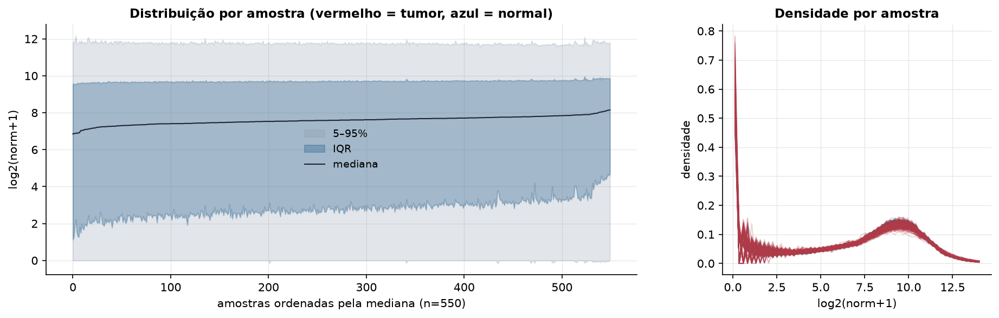
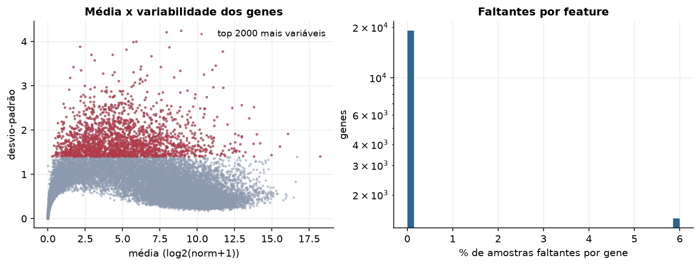
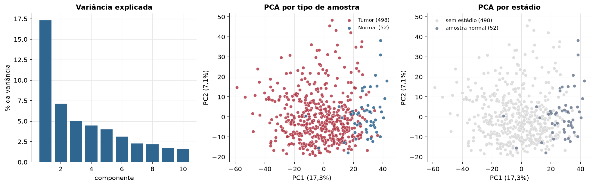
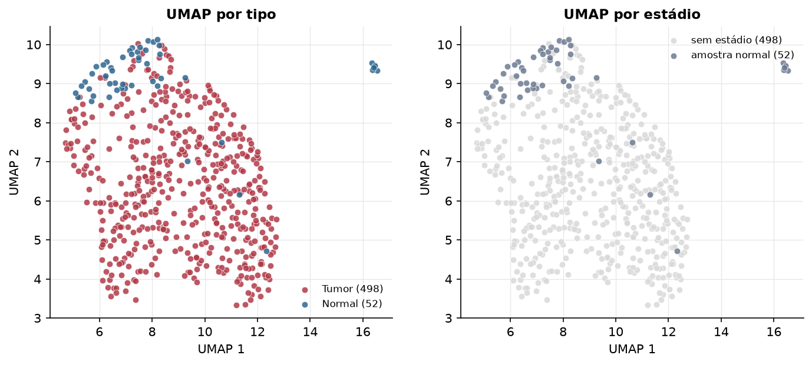
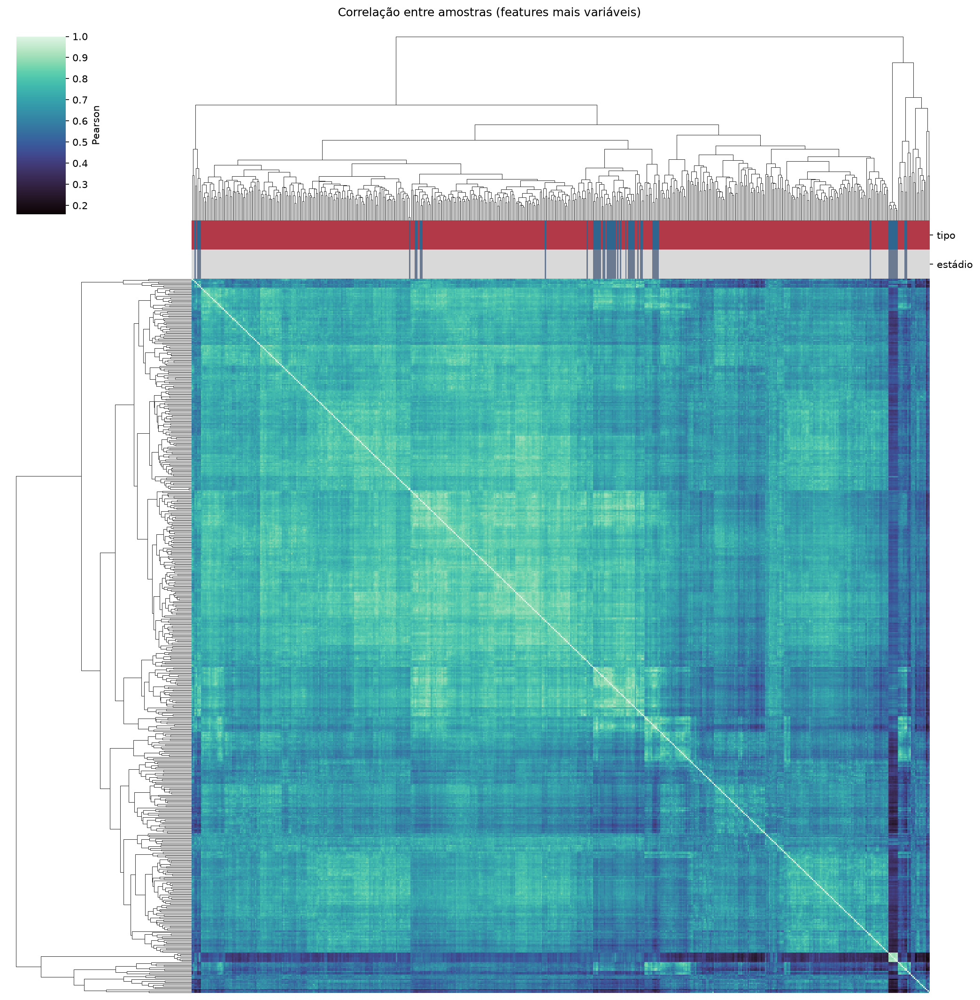
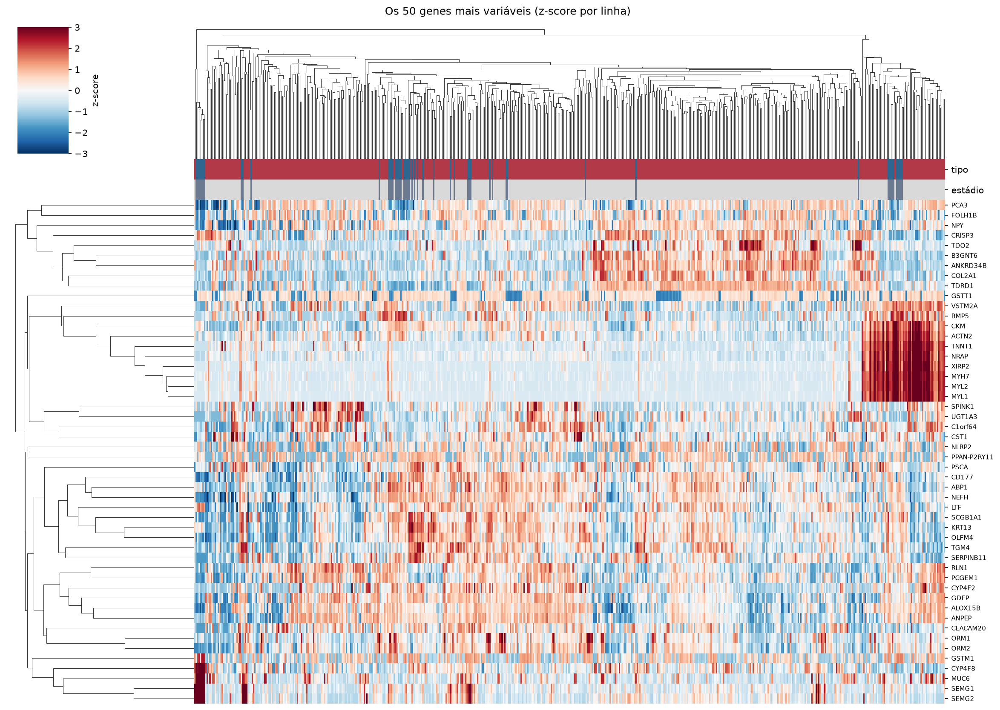
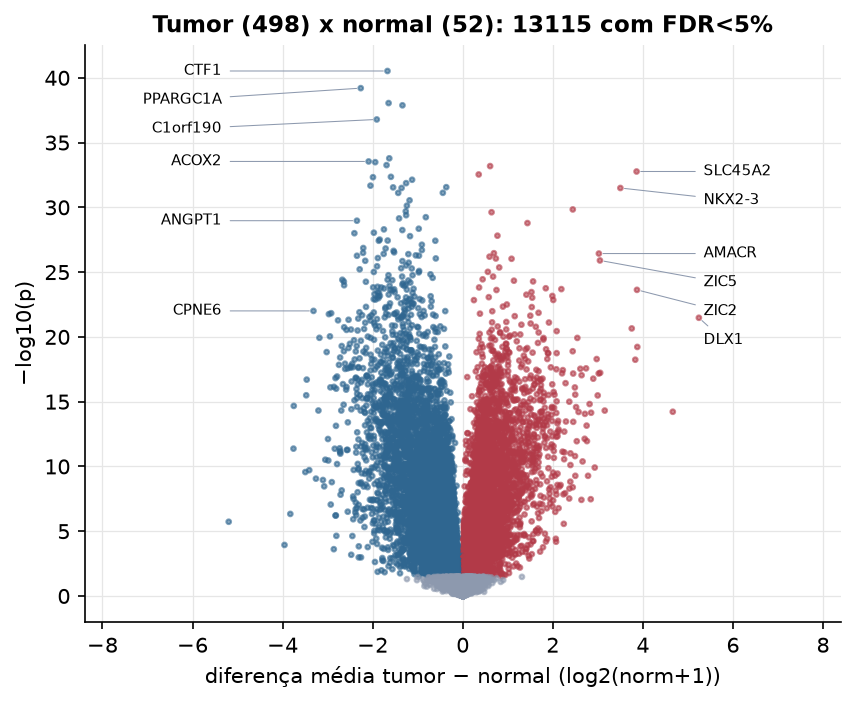
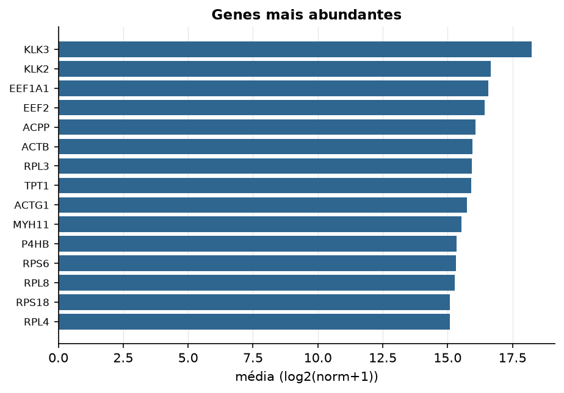

PRAD · RNA-seq (PanCanAtlas)
Illumina HiSeq, RSEM normalizado e corrigido por lote (EB++), log2(x+1) · gerado em 22/10/2026 02:56
20.531genes
498amostras tumorais
52amostras normais
0,4%valores faltantes
Fonte: PanCanAtlas EB++ via API do Xena
Estes valores já vêm normalizados e com correção de lote entre plataformas e centros. Servem bem para modelos gaussianos ou redes neurais; para um modelo de contagem use as contagens brutas do GDC.
Principais resultados
- 20.531 genes medidos em 550 amostras (498 tumorais e 52 normais); 0,4% dos valores estão faltando.
- Os dois primeiros componentes principais explicam 17,3% e 7,1% da variância das features mais variáveis.
- Correlação mediana entre amostras: 0,70.
- Amostras com correlação muito abaixo das demais (possíveis outliers técnicos): TCGA-HC-7211-11, TCGA-HC-7737-11, TCGA-HC-7738-11, TCGA-HC-7740-11, TCGA-HC-7745-11, TCGA-HC-7747-11, TCGA-HC-8258-11, TCGA-XQ-A8TA-01.
- Tumor x normal: 13115 genes diferentes com FDR < 5% (6346 maiores no tumor, 6769 maiores no normal; 52 pacientes têm o par tumor-normal).
- Mais aumentados no tumor: SNORA76, SLC45A2, SNORA72, NKX2-3, LOC100128675, XPO6, CCDC83, EFNA2.
- Mais reduzidos no tumor: CTF1, PPARGC1A, ROR2, PDPN, C1orf190, ARMCX1, ACOX2, RND2.
- Nenhum dos três primeiros componentes principais se associou a estádio, sexo, idade ou sobrevida com p < 0,05.
- Em mediana, 82,0% dos genes têm expressão acima de log2(norm+1)=1 em cada amostra.
Distribuição dos valores


Estrutura das amostras




Tumor x normal

Features mais diferentes entre tumor e normal
| diferenca_tumor_menos_normal | t | p | fdr | |
|---|---|---|---|---|
| CTF1 | -1.671 | -19.808 | 2.98e-41 | 6.03e-37 |
| PPARGC1A | -2.265 | -20.533 | 6.29e-40 | 6.35e-36 |
| ROR2 | -1.646 | -17.856 | 8.91e-39 | 6.01e-35 |
| PDPN | -1.339 | -17.375 | 1.33e-38 | 6.71e-35 |
| C1orf190 | -1.909 | -20.212 | 1.64e-37 | 6.64e-34 |
| ARMCX1 | -1.631 | -17.027 | 1.64e-34 | 5.53e-31 |
| ACOX2 | -2.089 | -17.95 | 2.86e-34 | 8.21e-31 |
| RND2 | -1.943 | -18.436 | 3.25e-34 | 8.21e-31 |
| C5orf4 | -1.692 | -18.261 | 5.49e-34 | 1.23e-30 |
| SNORA76 | 0.608 | 14.026 | 6.54e-34 | 1.32e-30 |
| SLC45A2 | 3.86 | 18.54 | 1.71e-33 | 3.14e-30 |
| SNORA72 | 0.355 | 12.948 | 2.89e-33 | 4.88e-30 |
| SPATA18 | -1.595 | -16.316 | 4.41e-33 | 6.81e-30 |
| FGFR2 | -1.993 | -16.867 | 4.72e-33 | 6.81e-30 |
| C7orf31 | -1.125 | -16.201 | 7.41e-33 | 9.99e-30 |
| HCG11 | -1.257 | -16.856 | 1.35e-32 | 1.71e-29 |
| TMLHE | -2.049 | -18.749 | 2.11e-32 | 2.51e-29 |
| C16orf62 | -0.366 | -14.326 | 2.77e-32 | 3.06e-29 |
| GPX3 | -1.546 | -16.431 | 2.88e-32 | 3.06e-29 |
| PLP2 | -1.358 | -18.005 | 3.19e-32 | 3.09e-29 |
| NKX2-3 | 3.501 | 19.768 | 3.21e-32 | 3.09e-29 |
| PPP2CB | -0.442 | -14.717 | 7.55e-32 | 6.72e-29 |
| ETNK2 | -1.433 | -18.153 | 7.65e-32 | 6.72e-29 |
| RAB34 | -1.181 | -15.998 | 2.87e-31 | 2.42e-28 |
| SNX7 | -1.24 | -16.642 | 7.44e-31 | 6.02e-28 |
| LOC100128675 | 2.444 | 18.762 | 1.45e-30 | 1.13e-27 |
| LGALS3 | -1.265 | -15.54 | 2.01e-30 | 1.51e-27 |
| XPO6 | 0.64 | 14.981 | 2.39e-30 | 1.73e-27 |
| GPX7 | -1.257 | -15.178 | 4.03e-30 | 2.81e-27 |
| NRSN2 | -0.82 | -13.5 | 5.76e-30 | 3.88e-27 |
Associação com variáveis clínicas
p-valores da associação dos três primeiros componentes principais (só tumores) com estádio (Kruskal-Wallis), sexo (Mann-Whitney), idade (Spearman) e sobrevida global (Cox univariado).
| estádio (Kruskal) | sexo (Mann-Whitney) | idade (Spearman) | sobrevida OS (Cox) | |
|---|---|---|---|---|
| PC1 (15,7%) | 0.452 | 0.128 | ||
| PC2 (7,6%) | 0.325 | 0.83 | ||
| PC3 (5,2%) | 0.177 | 0.92 |
Mais abundantes
